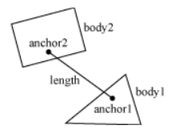

Creates a DistanceJoint between two bodies.
This joint constrains the distance between two points on two bodies to be constant. These two points are specified in world coordinates and the two bodies are assumed to be in place when this joint is created. The first anchor point is connected to the first body and the second to the second body, and the points define the length of the distance joint.


|
Making changes to a World is not allowed inside of the beginContact, endContact, preSolve, and postSolve callback functions, as BOX2D locks the world during these callbacks. |
Function
| Available since LÖVE 0.8.0 |
| This variant is not supported in earlier versions. |
Synopsis
joint = love.physics.newDistanceJoint( body1, body2, x1, y1, x2, y2, collideConnected )
Arguments
Body body1- The first body to attach to the joint.
Body body2- The second body to attach to the joint.
number x1- The x position of the first anchor point (world space).
number y1- The y position of the first anchor point (world space).
number x2- The x position of the second anchor point (world space).
number y2- The y position of the second anchor point (world space).
boolean collideConnected (false)- Specifies whether the two bodies should collide with each other.
Returns
DistanceJoint joint- The new distance joint.
Function
| Removed in LÖVE 0.8.0 |
| This variant is not supported in that and later versions. |
Synopsis
joint = love.physics.newDistanceJoint( body1, body2, x1, y1, x2, y2 )
Arguments
Body body1- The first body to attach to the joint.
Body body2- The second body to attach to the joint.
number x1- The x position of the first anchor point (world space).
number y1- The y position of the first anchor point (world space).
number x2- The x position of the second anchor point (world space).
number y2- The y position of the second anchor point (world space).
Returns
DistanceJoint joint- The new distance joint.
See Also